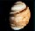

| Mercurio | |
|  | Venus | |
 | La Tierra | |
 | Marte | |
 | Jupiter | |
 | Saturno | |
 | Urano | |
 | Neptuno | |
 | Plutón | |
| Deja tu opinión | ||
URANO: UN SINGULAR PLANETA
Urano, el primero de los planetas descubiertos en época moderna, resulta apenas perceptible a simple vista en condiciones especialmente favorables. Situado a una distancia media del Sol de 2871 millones de kilómetros, invierte 84.01 años en describir un giro completo alrededor del astro.
La atmósfera de Urano está compuesta por un 83% de hidrógeno, 2% de metano y pequeñas cantidades de acetileno y otros hidrocarbonos. El metano situado en la parte alta de la atmósfera absorbe la luz roja, dando a Urano su color verde-azul.
La atmósfera está organizada en nubes que circulan a latitudes constantes, de forma parecida a como lo hacen las bandas latitudinales más intensas de Júpiter y Saturno. Los vientos en latitudes medias de Urano soplan en la dirección de la rotación del planeta. Estos vientos alcanzan velocidades de 40 a 160 metros por segundo (90 a 360 millas por hora). Experimentos científicos por radio han encontrado vientos en el ecuador que soplaban a unos 100 metros por segundo en dirección opuesta.
El descubrimiento de dos satélites acompañantes ha permitido avanzar en el conocimiento de la estructura de los anillos de Urano. Las lunas, Cordelia (1986U7) y Ofelia (1986U8), se pueden observar aquí a cada lado del brillante anillo epsilon; todos los nueve anillos conocidos de Urano son también visibles.
El anillo epsilon aparece rodeado por un halo oscuro como resultado del procesamiento de la imagen; los ocasionales puntos oscuros que se ven sobre el anillo son también artefactos. En el interior del anillo epsilon están los anillos delta, gamma y eta; los anillos beta y alpha; y finalmente, apenas visibles, los anillos 4, 5 y 6. Los anillos han sido estudiados desde su descubrimiento en 1977.
Esta pseudo-imagen del anillo de Urano fue generada usando la imagen FDS 26852.19 del Voyager 2. Esta imagen fue realizada con luz directa difusa y muestra unas bandas de polvo que no se ven en ninguna otra imagen. Se ha extraído una banda de tres píxeles de ancho de la parte más detallada de la imagen, haciendo la media para obtener una imagen de 1 píxel de ancho, luego se rotó 360 grados y se proyecto según una vista en perspectiva. El color real de los anillos es un gris neutro y son tan oscuros como el carbón.